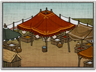
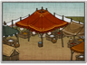

Enables
- Buildings:
 

Basic Building Statistics (can be modified by difficulty level, arts, skills, traits and retainers)
- Cost: 800
- +200 to wealth from commerce in this province
- +5 per turn to town growth from commerce within this province
- Enables recruitment of Rank 1 junsatsushi
Clan Effects
- Each economy chain building enables you to sustain one additional junsatsushi (to a maximum of 5)
Description
Fair exchange is not robbery.
A barter exchange allows farmers, fishermen, traders, indeed anyone, to swap goods they produce for other items they need. It improves the wealth of a province because people can specialise and become experts if they can swap their surplus for someone else's surplus. If, for example, a farmer can barter he can spend all his time farming, rather than wasting time trying to be an indifferent weaver. Barter is probably the oldest and most universal form of trade in the world. Anyone can understand the simple idea of swapping one thing, or pile of things, for another. Anyone with a surplus of something can become "richer" by trading that surplus away for other goods: his new possessions are his for less overall effort than if he had made them himself. It is, however, quite difficult to calculate fractional values for goods, or to organise complicated swaps involving more than a couple of goods or traders. Trade in kind is a very simple "spot market", and really rather hard to tax in a practical way. Is a tax of a bag of grain the same as taking a goat, a chicken or a bullock? And where does the taxman keep all these chickens and rice bags he has taxed?